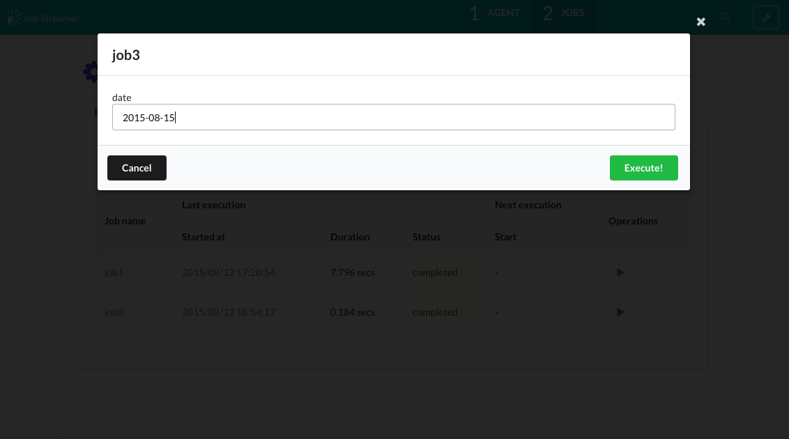
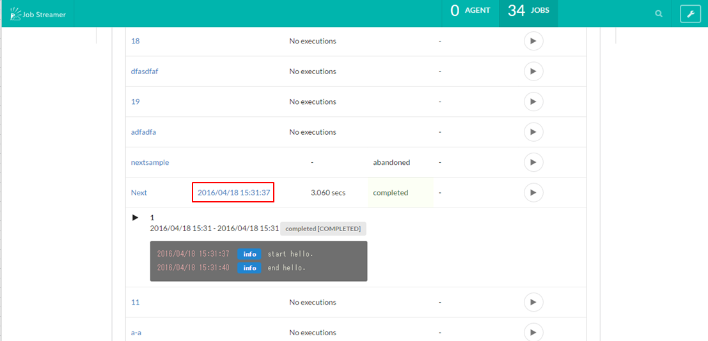

Execute job
Execute job manually
Press the play button for each job at the job list view (top page), then job execution starts.
Stop job Forcibly
Press the stop button for each job at the job list view (top page), then job execution stops.
Restart job
If the job can be restarted (it means all batchlets making up the job implement javax.batch.api.AbstractBatchlet.stop), you can restart the job that was interrupted or failed from the Console.

Specify parameter
If you used Expression Language in the job Properties when you created the job, input parameter form is displayed when you execute or restart the job.
Input each parameters and press Execute/Restart button, then the job starts with parametes.

Refer to job execution log
Press the start time link for each job at the job list view, then you can check the execution log.

Schedule job
Please refer to Schedule job.